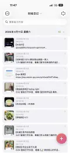
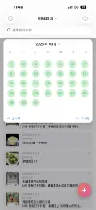
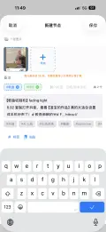
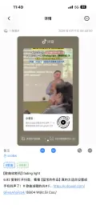
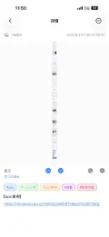
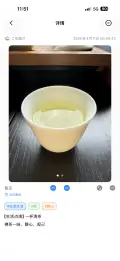
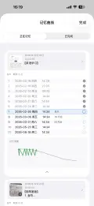

碎片化时代的注意力管理，从「刷完更空」到「看一个算一个」：用时线日记，把碎片信息流变成个人成长的养分
我们正处在一个信息超载、节奏极快、注意力被算法、热搜与短视频切成碎片的时代。
你是不是也常觉得，屏划久了，人往往不是更满足，而是更空？
若不靠硬扛戒屏，这点注意力，又该怎么收、怎么留，才不至于刷完就散？
本文给出其中一种答法：我用「时线日记」，把值得停一下的那一刻落成记录、排进时间线，日后翻得回来；真要记进长期记忆的，再交给记忆曲线去排期。
是否如此，不妨用你自己的划屏习惯验一验——往下读几段，对照日常刷屏时的感受即可。
在移动互联网与推荐算法深度渗透、人人被热点与短视频裹挟着划屏的今天，推荐、热搜、短视频和长文又在同一条信息流里赛跑——我们被训练成很难停手的人，注意力成了最稀缺的资源。常见的自救是意志力、时间管理、戒断挑战：底色往往是在和环境硬碰硬地对抗。久了容易累，也容易落空，因为人没法二十四小时绷紧。
如果把问题换成另一句：流过来的内容里，真的毫无可取之处吗？还是其中常夹着一点你划过去、没接住的「养分」？差别有时不在内容本身有没有营养，而在于你有没有自己的一道工序，把别人的输出，收成记在你名下、以后还能调用的东西。
我面对短视频与长文时，渐渐比从前从容：它们于我，更像坊市与书肆里次第排开的货摊——不必照单全收，却可以带着空碗去逛、去挑；偶得一味，便收进「时线日记」里的时间线，像把少许好货摆进自家碗柜。
这份从容背后，是我把纯旁观慢慢换成了给自己下厨：面对的是一锅杂碎般的食材，我不可能全吃，但可以拣几样能进嘴的，洗一洗、切一切，盛进自己的碗——那一排碗，就是按日排开的时间线。下文要写在这套做法里，拣选与盛放具体怎么做、怎样记得住、找得回；再往后会说到轻量加工、几类模板和记忆曲线。
一、时线日记在这套做法里，是什么角色
它不是戒手机工具，也不替你判断内容好坏；它是一款 iOS 上的图文时间线应用（iPhone / iPad，数据默认在本地；亦可在 Mac 上以「Designed for iPad」方式使用）。从最初的想法，到原型、开发实现、自用测试和持续迭代，我都站在一线；很大一部分动力来自自己也要天天记。用得越久，越清楚它对我的一重意义：缓解刷完之后的「空」——在碎片时间里，仍能做一件很小、但说得过去的事：把打动你的东西，收成一条可追溯的节点。




二、脑科学里的一句老话：必要难度，但不必那么重
学习心理学里有个说法叫必要难度（desirable difficulties，可理解为「有点费劲才记得牢」）：真正进脑子的内容，往往要经过自己的加工——复述、改写、联想、归类，而不是只过眼、不过手。
正儿八经的学习太重，碎片时间扛不动；完全不动手，又容易变成「看了等于没看」。我更想待在中间这一档：
- 有一点点门槛：截图、写两句、打标签、贴链接——够你动脑，但不至于像写论文；
- 有可追溯：时间线排开，哪天记的、记的什么，一搜能回来；
- 有体系感：用标签把散点串成主题，有大块时间时能按主题复习，而不是在相册里大海捞针。
时线日记把时间线、彩色标签、全文搜索和记忆曲线复习放在一块，就是为了这条链路：记录 → 归类 → 回看 →（可选）按科学间隔再记一遍。


三、我常用的三类记录（也是我最推荐给别人的模板）
下面三类完全对应真实用法，你可以按需取用。
1. 视频类（知识向）：转写 + 截图 + 链接 + 标签
遇到可能将来有用的讲解、观点、教程，我会：
- 用习惯的语音转写、纪要类工具把音整理成文字，导出或复制要点；
- 在时线日记里新建一条节点：关键画面截图 + 转写摘要或截图一并附上；
- 在备注里写：自己的一句话理解、关键词，以及视频源链接和转写/笔记链接（App 会识别备注里的网址，在详情里点开就能回源）；
- 在标签里打上主题词——例如
#AI工具#创业案例——方便以后按主题「攒一批再消化」。
这样，刷到一个好内容，就从「看过」变成「落袋为安」；有空时打开某个标签，就是在给自己的知识库做主题阅读。


2. 文章类：信息截图 + 感悟 + 链接 + 标签
长文、研报、深度稿，往往不适合当场读完。我的习惯是：
- 关键信息截图（数据、框架、金句段落）；
- 备注里写：我同意什么 / 我质疑什么 / 和我已有认知怎么接得上——两三行就够；
- 附上原文链接，日后要写东西、要辩论、要讲课，能秒回现场；
- 同样用标签做横向归类（行业、人物、方法名等）。
文章和视频本质同一套逻辑：先捕获，再加工，再可检索。


3. 生活点滴：多图 + 只给自己看的话
除了发朋友圈的那几张，家人聚会、旅行、值得记住的对话，我会把更多照片放进一条节点里，备注里写不适合公开说的小细节、当时的心情、对方的玩笑——这是给自己的时间线存档，不是表演给别人看的生活。
这类记录对「刷完更空」也有用：你在提醒自己，真实的生活密度不在信息流里，在你愿意为之留痕的关系与场景里。


四、记忆曲线：给「真的要记住」的那一小撮
并不是每条记录都要上强度。对需要背、需要长期调用的内容（考点、方法步骤、重要定义），我会把该节点加入记忆曲线。
当前版本里，一条记忆曲线对应固定 11 个复习节点，时间跨度约到加入后半年左右（末次约在 180 天一带）；列表里能看到哪天该复习，本地通知也会在约定时段提醒。若日后规则有调整，以 App 内与官网说明为准。
通过记忆曲线，把「记住」从碰运气，改成跟一张科学的记忆时间表走。


五、心态上的一句话：从纯消费者，到给自己「挑一挑、留下来」
用这套方法之后，我对自己刷手机的心态会诚实很多：
- 若只是放松，就放松，不必羞辱自己；
- 若刷完常觉得空，可以试试：每刷到一个真正打动你的，就用时线日记「收」一次——有感悟写感悟，没感悟写关键词和链接也行。
看一个算一个，不是鸡汤，是你可以在手机里留下的一条条证据：你的注意力曾经停在有意义的地方，而且找得回来。
六、小结
在碎片化时代，重新拿回我们的注意力的方法，可以概括为以下三点：
- 先换思路（从硬对抗屏幕，到给自己一道「拣选—盛放」的工序）
- 再保持轻量加工（必要难度但不写论文）
- 最后按需上记忆曲线。
在碎片化的环境里，把你的注意力主动往内收，过滤、收集，积累成自己用得上的养分，而不是刷完就散。
愿你少被「刷完更空」绑架，多给自己留一点摸得着的收获。
分享本文
在官网了解全部功能与定价，一键跳转 App Store。